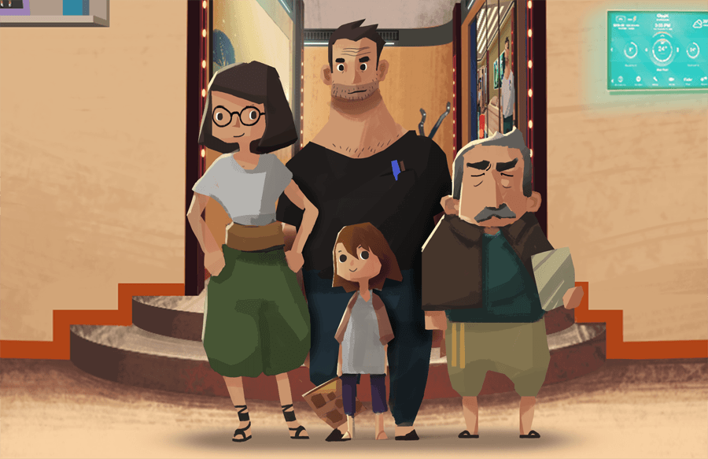

Our Heritage is the name of a video game being developed in Costa Rica, to create awareness of the causes and effects of climate change.
Historia
Una búsqueda entre recuerdos
Amy es una niña que vive con sus padres y abuelo en un edificio de apartamentos en el año 2050. A ella le gusta mucho explorar y conocer nuevos lugares, le interesa saber más sobre el pasado y los lugares que su familia visitó.
En su escuela le han asignado hacer un collage para su clase de arte, en donde deberá recolectar fotografías antiguas sobre su familia y lugares fascinantes.
Debido a los efectos drásticos provocados por el cambio climático en el mundo natural y en los seres humanos, existen restricciones para salir al exterior y toques de queda, que desaniman a Amy.
Descubrí los diferentes eventos que involucran a la familia de Amy y la manera de pensar de cada uno sobre el cambio climático.
¿Qué planeta le estamos heredando a nuestras futuras generaciones?
-
Amy
Una niña de 8 años, linda, dulce y optimista. Amy es muy inteligente, y debido a su desconocimiento de cómo fue el mundo en el pasado, es más bien ingenua en comprender lo mal que está en la actualidad.
Aunque Amy está llena de energía y ambiciones, el espacio y libertad restringidos, han desarrollado su gusto por la literatura y otras aficiones, como programas de televisión. Tiene un carácter dulce con su familia y amigos, pero se vuelve apasionada y seria cuando está en “modo aventura”.
-
Mamá
Activista ambiental de 35 años. Siempre tuvo claro que los malos hábitos de la humanidad, ocasionarían daños al medio ambiente. Considera que el cambio climático es un tema de negligencia, no de destino.
Es segura de sí misma y tiene una actitud optimista hacia la posibilidad de cambio y de progreso. Es mucho más seria que su esposo, pero a menudo se ríen y juegan juntos.
Le apasionan los libros, es realista y una líder natural. Es miembro activo de grupos conservacionistas y dirige varios de ellos. Aunque el mundo no es lo que era, no se ha dado por vencida, intenta proteger el planeta dentro de sus posibilidades.
-
Papá
Ingeniero retirado de 40 años. Dedicó su carrera profesional a la ingeniería estructural. Al contrario de su padre, sí creyó en el cambio climático desde joven, pero para él, el mundo estaba demasiado dañado y lo único que se podía hacer era prepararse para el futuro.
Aunque renunció a su trabajo, continúa diseñando conceptos y productos para el movimiento ambientalista de su esposa, a la que apoya en sus esfuerzos políticos y sociales. Su motivación principal es mejorar el mundo para su hija. Es simpático y compasivo, aunque le gusta más ahondar en su trabajo que en cualquier otra cosa.
-
Abuelo
Un hombre de 70 años que pasó casi toda su vida negando el cambio climático. Después de ver y experimentar las consecuencias desastrosas, entró en razón. Su lenguaje corporal refleja su frustración y arrepentimiento sobre el estado actual del mundo.
Cuando habla con Amy intenta ser jovial y optimista, pero a veces su vergüenza sale a la luz. Con el resto de la familia se porta distante y amargado; aun así, les ama y cuida mucho. No es realmente conservador, pero le cuesta salirse de su zona de confort.
Personajes



Galería
ScreenshotsConcept Art